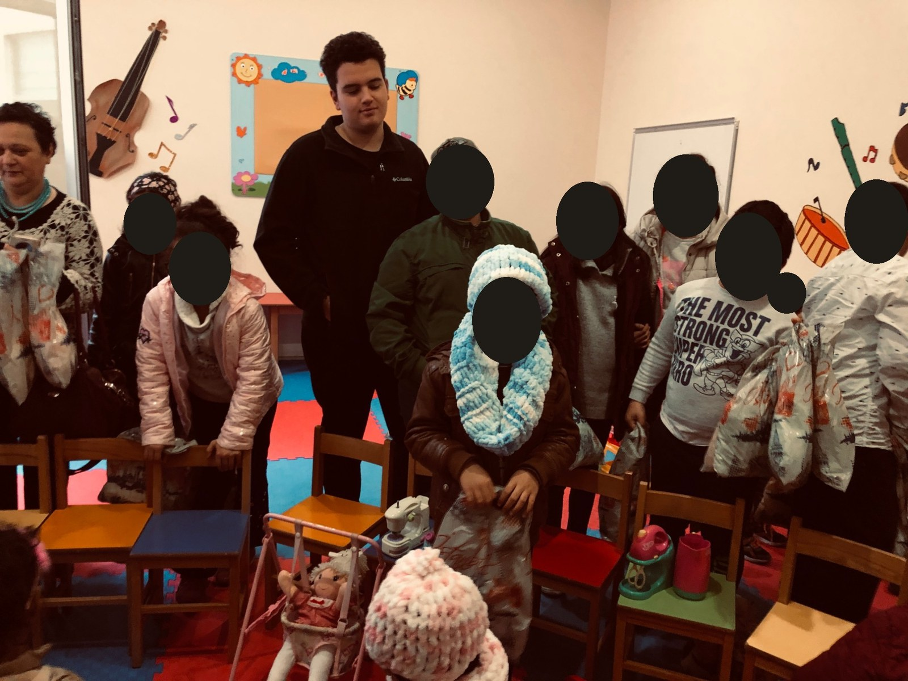

The books
Three books so far. Each one can be knitted three ways, all counted from the same labels by the same rules.
- In five coloursCold to warm in yarn colour, a ridge where the book is tense, a hole where a person is in the passage.
- In one yarnNo colour at all. Cold is rough, warm is smooth, and a rope twists where the book is tense. It can be read by touch.
- In Alize PuffyA loop yarn knitted with fingers alone, eight loops wide and one colour. Neighbouring passages share a row, and three kinds of loop carry the feeling, the tension and the doubt.
The colours are a choice. Changing them moves no stitch.
Loading the books.
Why a scarf
In 2025 a court described how Anthropic built the library it trained its AI from. It bought millions of printed books, cut off their bindings, scanned the pages and threw the paper away. The judge ruled that lawful. Millions more books had come from pirate libraries, and for those the company settled with authors for $1.5 billion in 2026.
Lawful or not, I find this annoying: books taken apart so a machine could learn from them, with nothing left to say which page taught it what. I wanted to try the opposite. Let an AI read a book, keep the book whole, and hand back something a person can hold and check row by row.
From 2018 until Covid in 2020 I taught children to knit. So when I looked for a way to keep a book, a knitted scarf sounded cool especially with the approaching weather.



Me teaching, 2018 to 2020.
How a book becomes a scarf
- A model reads it. A model running on a laptop reads the book a passage at a time, without being told which book it is. It labels every sentence warm, cold or neither, and tense or calm, and says who is there, pointing at the sentence that shows it.
- Code checks and counts. A claim is kept only if the sentence it points at exists and says so. Then the labels are counted: warm against cold picks the yarn, tense sentences raise a ridge, and a person in the passage makes an eyelet in their column.
- The count is a pattern. One passage is one pair of rows. Click a row and it unravels into its instructions, the sum that chose its yarn, and every sentence with the label the model gave it.
How far to trust it
The labels are one model’s opinion of each sentence. So the model is asked twice, in different words, and both answers are counted. Where the two answers alone would choose yarns two or more shades apart, the row is left undyed: the scarf makes no claim there. No person has checked the labels yet. Each scarf’s page gives its own numbers under “How it was knitted”, and lets you label a sample yourself.
Builds on
- Rudin, 2019: prefer models a person can follow over explanations of a black box.
- Jacovi and Goldberg, 2020: what it means for an explanation to be faithful.
- Sclar and others, 2024: the wording of a question moves a model’s answers.
- Chang and others, 2023: which books a model has memorised.
- Reagan and others, 2016: the emotional arcs of stories.
- Jansen and others, 2015: data you can hold in your hands.
Full references, the limits of the method and the code are in the repository. There is also a poster.
Earlier studies
The same reading of Pride and Prejudice, drawn two other ways before the scarf: as a survey map and as woven cloth.